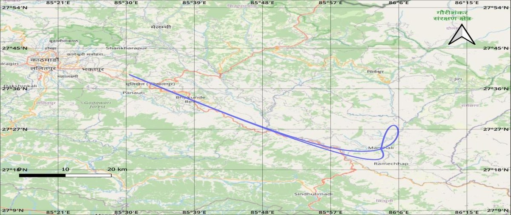
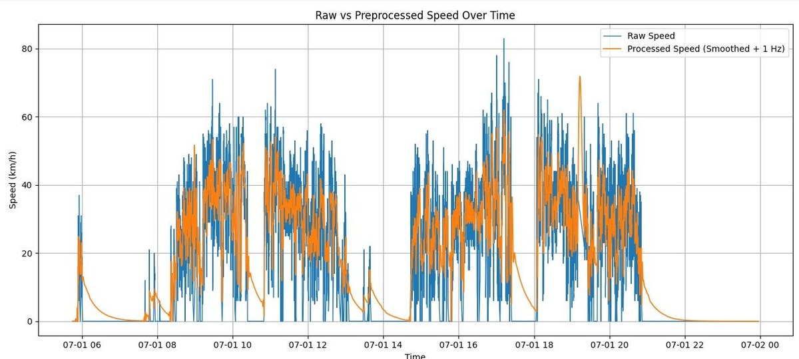
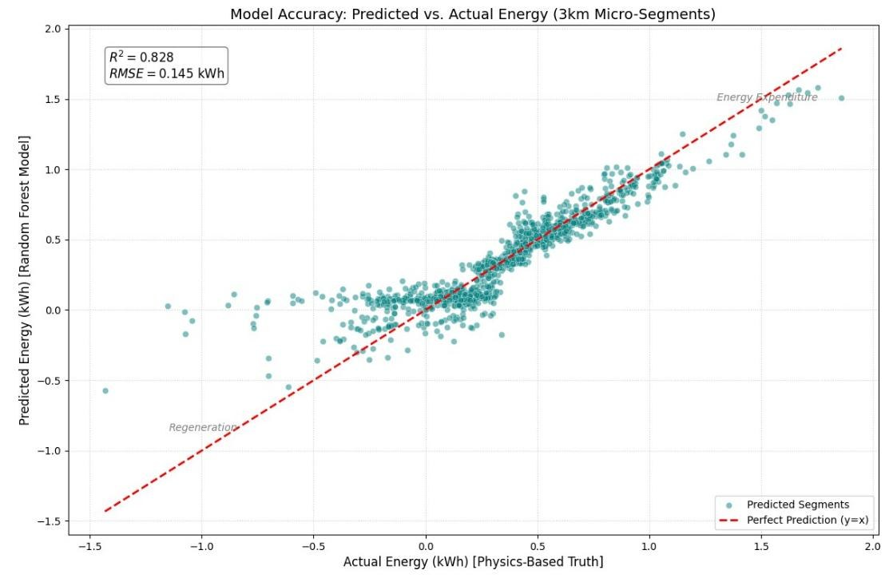
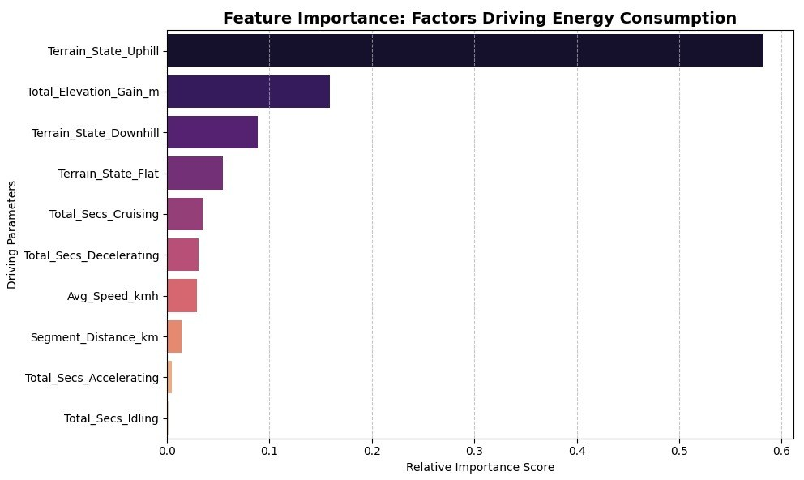

How far an electric vehicle can go depends on how much energy it uses, and on a hilly road that changes a lot from one stretch to the next. Most energy models are built on standard drive cycles and do not handle long climbs and descents well.
This project builds a model for the Kathmandu to Manthali route, about 256 km of steep and varied road. It combines a physics-based energy calculation with a Random Forest model, so the prediction reflects the terrain as well as the driving.
Data
GPS logger data from a passenger vehicle that drove between Kathmandu and Manthali every day for three months. Each record has latitude, longitude, speed, heading, altitude and time.
Method
Removed outliers, filled the gaps with cubic spline interpolation to get one reading per second, and smoothed sensor noise with a Kalman filter.
Calculated the mechanical energy at the wheels from vehicle dynamics: rolling resistance, the pull of gravity on slopes, air drag and acceleration.
Labelled the driving as idling, cruising, accelerating or decelerating, and added up energy over 3 km segments.
Trained a Random Forest (100 trees, maximum depth 10) on 75% of the trips and tested it on the other 25%.

The route for one round trip, plotted from the interpolated GPS data.

Raw speed readings against the processed signal after outlier removal, interpolation and Kalman filtering.
Results
Energy model
R² of 0.8273 and RMSE of 0.145 kWh per 3 km segment on the test trips.
Tuning
R² improved from 0.7505 with default settings to 0.8273 after tuning the hyperparameters.
Driving range
Using a usable battery capacity of about 41.86 kWh, the model predicted an average range of 357.27 km. The actual average was 363.76 km.
Range error
3.92% MAPE per trip, with an RMSE of 20.22 km.

Predicted against actual energy for 3 km segments. Points near the dashed line are accurate predictions.

Feature importance. Uphill terrain and total elevation gain matter most, which matches what the physics predicts.